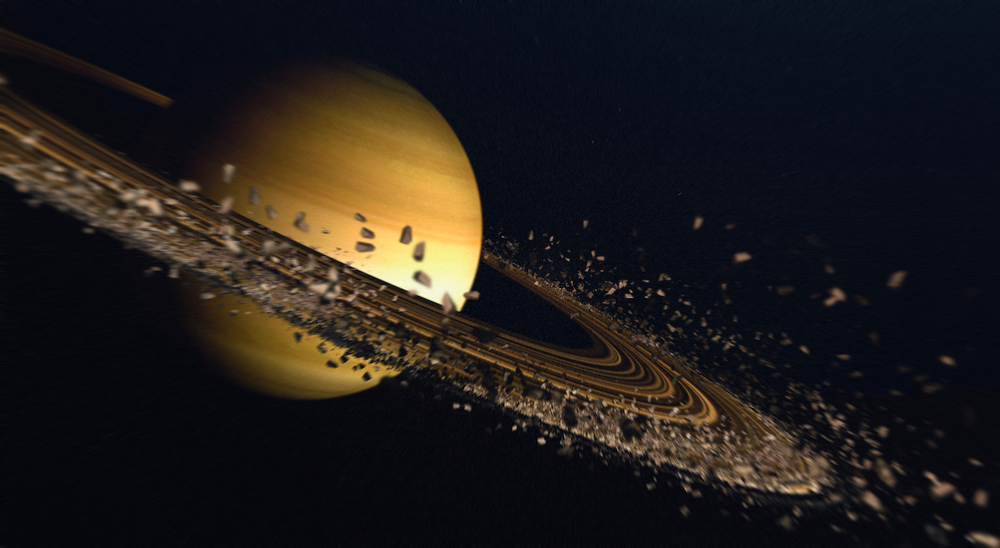
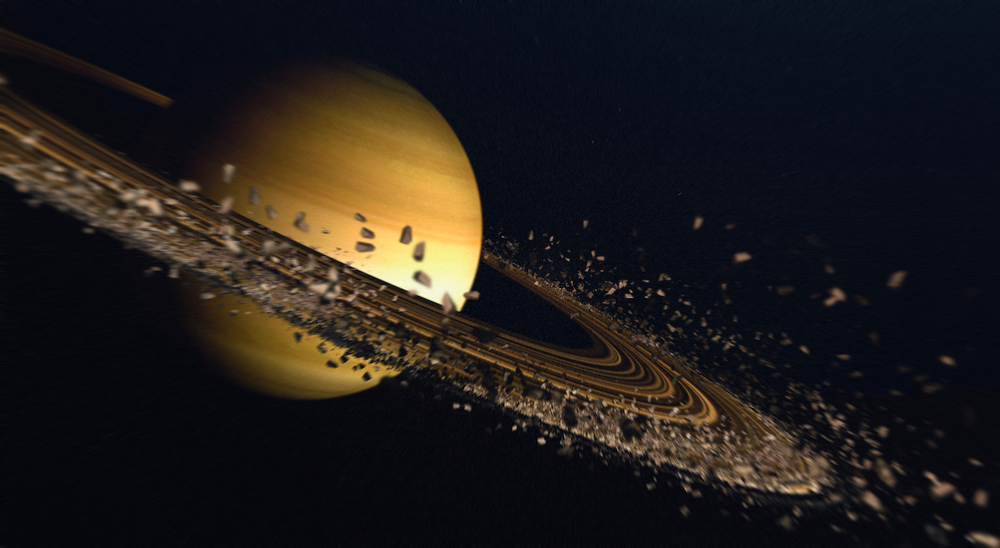

Най-известната характеристика на Сатурн са неговите пръстени. Те са съставени предимно от ледени частици с различен размер – от микроскопични зърна до огромни късове, които орбитират около планетата. Пръстените могат да достигнат до 282,000 км в ширина, но са изненадващо тънки – в някои части дебелината им е само около 10 метра.
Въпреки огромния си размер,газовият гигант , Сатурн е планетата с най-ниска плътност в Слънчевата система. Той е достатъчно лек, така че ако бихте могли да поставите Сатурн в огромен океан, той би плавал. Плътността на Сатурн е по-малка от плътността на водата.

Подобно на Земята, Сатурн преживява сезони поради наклона на своята ос. Въпреки това, тъй като една година на Сатурн трае около 29.5 земни години, всеки сезон продължава около 7 земни години.
Сатурн има впечатляващ брой луни, с повече от 80 потвърдени луни, което го прави планетата с най-много луни в Слънчевата система към момента. Най-голямата луна, Титан, превъзхожда дори планетата Меркурий по размер и притежава гъста атмосфера.
Северният полюс на Сатурн показва уникален хексагонален образец, който не се наблюдава на другите планети. Този шестоъгълен вихър е стабилен и се запазва във времето, което е уникално атмосферно явление.

 
